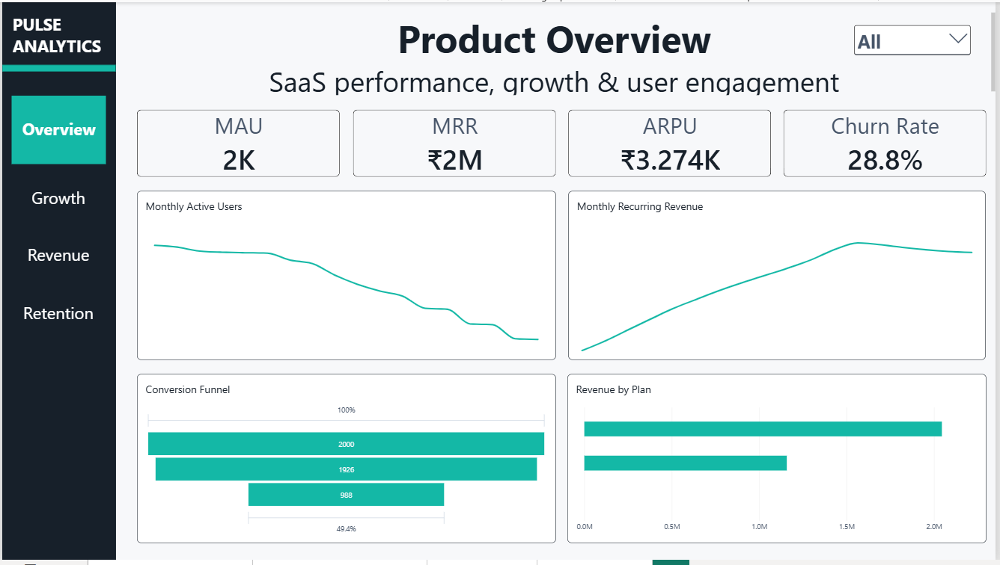

Activation
How active is the user base, and how many users become engaged?
An end-to-end analytics product built to understand how users move from acquisition to engagement, conversion, monetization and retention.
THE BUSINESS QUESTION
SaaS data is fragmented by design. Acquisition tells you where users came from. Product events show what they do. Subscriptions show how they monetize. Retention analysis shows whether that value lasts.
The project brings these signals together into one business-oriented analytical solution rather than treating each dataset as a separate report.
The final Power BI product is organized into four views: Executive Overview, Growth & Acquisition, Revenue & Monetization, and Retention & Engagement.
How active is the user base, and how many users become engaged?
How many users move from signup and engagement into paid subscriptions?
How is recurring revenue distributed across plans and over time?
How does activity change across signup cohorts, and how much churn is occurring?
THE DATA
One record per user, including signup date, country and acquisition channel.
user_id · signup_date · country · acquisition_channelPlan, price and subscription lifecycle data used for monetization and churn analysis.
user_id · plan_type · start_date · monthly_price · end_dateProduct interaction records used to measure activity, engagement and session behavior.
user_id · event_date · event_type · session_durationANALYTICAL WORKFLOW
Load source tables, parse dates and build derived fields for subscription and event analysis.
PYTHON / PANDASCreate user-level summaries, monthly metrics, funnel metrics and cohort retention tables.
GROUPBY / PIVOT / MERGEMeasure MAU, MRR, churn, ARPU, conversion and engagement across the customer lifecycle.
SQL CONCEPTS / ANALYTICSTurn the prepared analytical datasets into a four-view Power BI dashboard.
POWER BI / DAXFUNNEL ANALYSIS
The source analysis calculates a 96.3% engagement rate, followed by a 49.4% trial-to-paid conversion. Among engaged users, the paid conversion is 51.3%.
This makes the conversion step the clearest point in the funnel to investigate further.
POWER BI PRODUCT
The dashboard is structured like a product analytics workspace: start with the overall health of the product, then move into acquisition, monetization and retention.

MAU, MRR, ARPU, churn and the conversion funnel establish the product baseline.
Signup volume, acquisition channels and channel-level paid conversion.
MRR, ARPU, paid users, active subscribers and plan-level revenue.
Cohort activity, churn and average session duration.
WHAT THE DATA REVEALS
1,926 of 2,000 users recorded a feature-use event. Paid conversion was 49.4%, leaving the largest funnel drop between engagement and payment.
Organic converted 344 of 669 users, compared with 48.82% for Paid Ads and 47.94% for Referral.
The subscription data contains ₹2.045M from Pro plans versus ₹1.158M from Basic plans.
Across the twelve cohorts represented in the retention dataset, the mean retention rate at cohort index 6 is approximately 53.8%.
ANALYTICAL IMPLICATIONS
The funnel shows strong engagement but a much lower paid stage. A next analysis should isolate conversion by plan, acquisition source and engagement depth.
Pro generates the larger share of subscription revenue in the source data. Monitoring Pro retention and downgrade behavior can connect revenue to retention.
The retention view makes month-by-month activity visible by signup cohort, giving the team a way to spot weakening cohorts before looking only at aggregate churn.
Method note: the cohort analysis measures monthly active-user retention — whether users recorded at least one event in a given month — rather than conventional subscription-survival retention.
TOOLKIT
Data loading, date handling and analytical preparation.
Grouping, merging, pivoting and user-level feature creation.
Analytical thinking around joins, aggregation and business metrics.
Four-view dashboard for executive and product analysis.